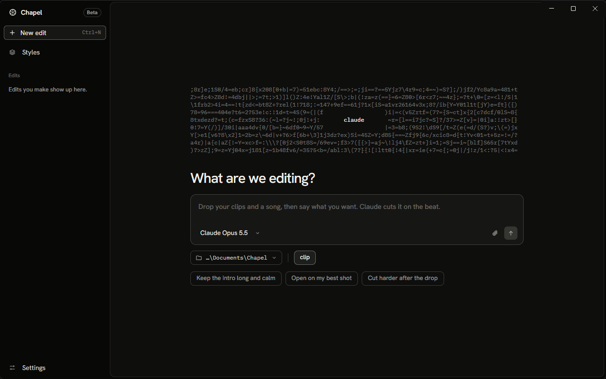

Drop your clips.
Claude cuts the edit.
Chapel is a free desktop app that edits videos with Claude. Give it your clips and a song, pick a style, and it cuts them on the beat. Then change anything by typing. It runs on your own Anthropic API key.
Free. Windows 10 and 11. You pay Anthropic only for what Claude uses.
You drop the clips.
Claude cuts the edit.
Every edit gets its own folder and its own chat. Claude listens to the song, looks at your clips and cuts them in the style you picked. You watch it work, then ask for changes.
- 01Drop your clips and a song on the box and pick a style.
- 02Claude listens to the song and finds the drop and the beat.
- 03It looks at your clips and picks the shots.
- 04It cuts them on the beat, checks the frames and renders the video.
- 05The video plays in the app. Type what to change and it cuts again.

Every style is a recipe
Claude follows to the frame.
A style says how the edit is cut: the format, where the cuts land and what's added. Claude follows it and checks its own work before you see the video.
Don't like a cut?
Say so.
Type the change the way you'd tell an editor. Claude reworks the edit and renders it again, and every version is kept.
Most questions have
short answers.
Price
Chapel is free. Claude runs on your own Anthropic API key, so you pay Anthropic for what each edit uses. Chapel shows the cost after every change.
Your key
Your key is encrypted with Windows' own protection and stays on your computer. Chapel only sends it to Anthropic.
Your videos
Your clips stay on your computer. Claude reads the edit plan and the still frames it checks, and those go to Anthropic.
Watermark
Edits carry a small "made with chapel" in the corner. Turn it off in Settings, or add your own handle.
What it needs
Windows 10 or 11, Python 3.12, ffmpeg and Git for Windows. Chapel checks for each one and tells you what's missing.
Styles
Chapel ships with the clip style. Uploading your own styles as .zip files is coming next.